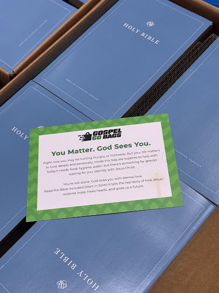

Sometimes the most meaningful things are also the simplest. My son had been going to a monthly gathering here in Phoenix called Gospel Go Bags, and after a couple of visits he suggested I come along too. I am so glad he did.
The idea is beautifully simple. On the last Saturday of every month, volunteers gather to assemble bags filled with essentials. Food, hygiene items, clothing, and a Bible, along with information pointing people to local resources for shelter, food, employment, and mental health support. Everything is lined up and ready when you arrive. You just work your way down the line and put the bags together.

What I loved most is the personal touch. You get to write a note to tuck inside each bag, and another note goes right on the outside. A small word of encouragement for whoever receives it. Then you take the bags with you and deliver them to someone who is homeless or simply in need.
Here is the part that stuck with me. Within minutes of leaving, my son was able to hand out a couple of bags right around the corner. No long search, no complicated process. Just a simple act of kindness meeting a real need, moments after we walked out the door. It was meaningful in a way that is hard to put into words.
I shared a short video from our morning above. You can also watch it directly on YouTube.
Want to Join In?
Gospel Go Bags Monthly Gathering
When: Last Saturday of every month at 10:00 AM
Where: Living Streams Church, Phoenix, AZ
Details and RSVP: gospelgobags.org
If you are in the Phoenix area, I would encourage you to check it out. And if you are not, maybe there is something similar near you, or maybe this sparks an idea to start something of your own. It does not take much. A bag, a few essentials, a handwritten note, and a willingness to hand it to someone who needs it.
Encouragement does not have to be complicated. Sometimes it fits in a bag, with a note that says someone cares.
My hope is that efforts like this live on and keep growing into something meaningful for years to come. Thank you to the Gospel Go Bags team for making it so easy to show up and serve, and thank you to my son for the nudge to go.